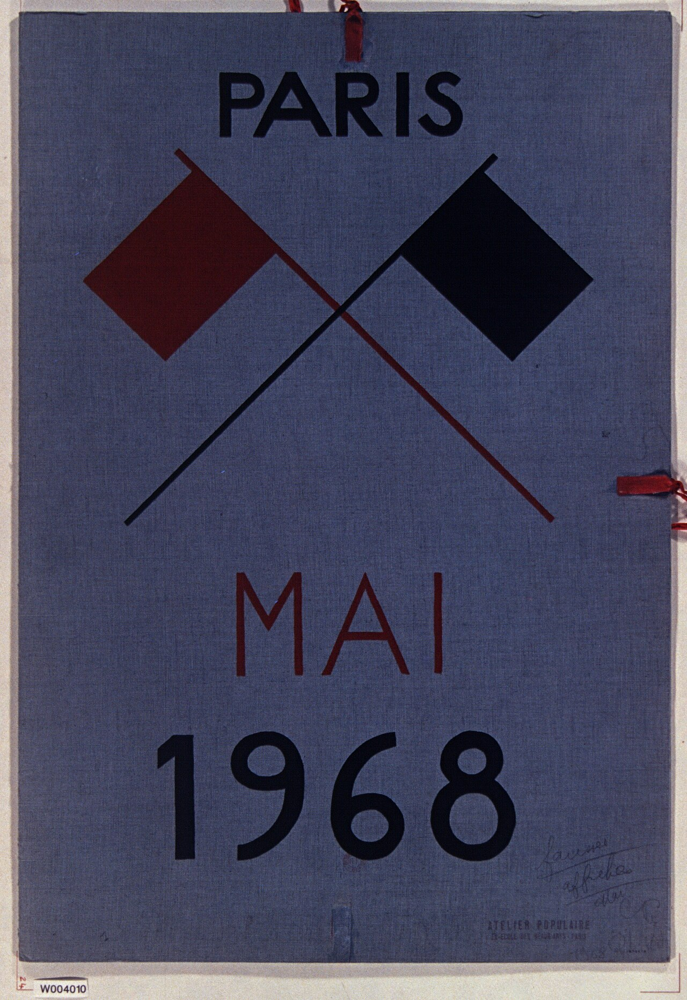

1968년 5월, 파리의 대학생과 노동자 1000만 명이 파업했습니다. 드골 정권이 흔들렸습니다. 구호는 — "상상력에 권력을", "금지하는 것을 금지하라".
고다르·트뤼포·말 등 누벨바그 감독들은 5월 18일 칸 영화제 중단을 이끌었습니다. "노동자가 싸우는 동안 영화제를 열 수 없습니다." 스크린을 닫는 것도 — 영화의 행동이었습니다.

Mai 1968 · 파리 포스터